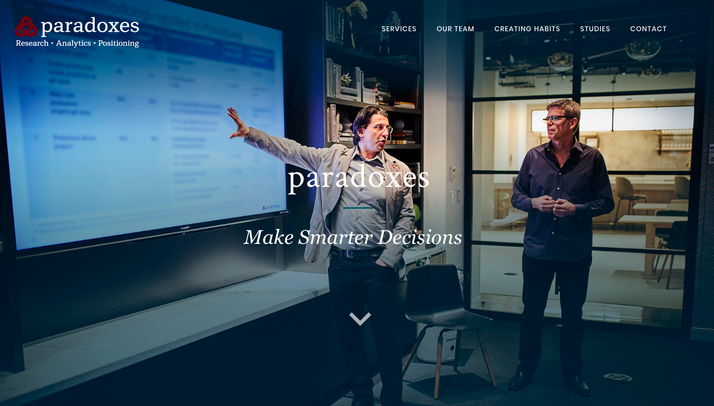
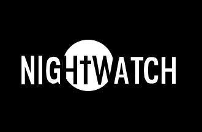

I am fascinated with the intersection of technology and society. The selected projects below reflect my desire to create experiences with sensitivity to differing values and user diversity.

Creating an Impactful First Impression

Addressing Homelessness in Seattle